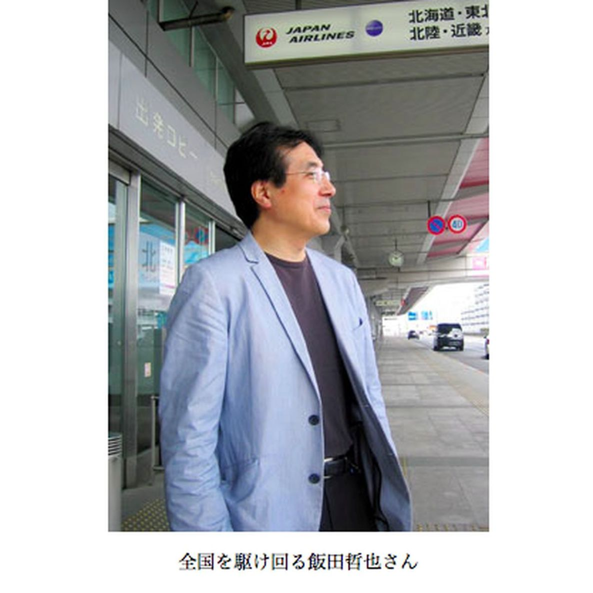

| プロメテウスの罠〔１２〕 脱原発の攻防「巨大利権構造と戦う」 (朝日新聞デジタルＳＥＬＥＣＴ) | |
| 朝日新聞 | |
| (2013) | |
野田政権の「脱原発依存」方針を受けて設けられた総合資源エネルギー調査会「基本委員会」。脱原発への道筋が議論されるはずだったが、委員の３分の２は原発維持派だった。原子力委員会「新大綱策定会議」では推進派の秘密会議が発覚。使用済み核燃料の再処理をめぐる報告書案が書き換えられていた......。福島原発事故を予言した故高木仁三郎の遺志を継ぐ識者らの証言から、変わらぬ「原子力ムラ」の癒着ぶりが浮き上がる。
内容紹介
野田政権の「脱原発依存」方針を受けて設けられた総合資源エネルギー調査会「基本委員会」。脱原発への道筋が議論されるはずだったが、委員の３分の２は原発維持派だった。原子力委員会「新大綱策定会議」では推進派の秘密会議が発覚。使用済み核燃料の再処理をめぐる報告書案が書き換えられていた......。福島原発事故を予言した故高木仁三郎の遺志を継ぐ識者らの証言から、変わらぬ「原子力ムラ」の癒着ぶりが浮き上がる。
初出
朝日新聞 二〇一二年五月二十六日～六月八日
第１章 ゼロか、２０％以上か
第２章 維持派が多いけれど
第３章 幻の賛否半々リスト
第４章 異論、あっていい
第５章 １５％案「入れよう」
第６章 先人は警告していた
第７章 終止符という希望
第８章 今こそ正確な情報を
第９章 危ないものは高い
第１０章 無責任体制と闘う
第１１章 秘密会合で大荒れ
第１２章 「日米は核の共同体」
第１３章 ムラの体質に違和感
第１４章 コスト、どっちが得
日本の発電量に占める原発の比率を、どうするか。
ゼロか、２０％か、それとも――。
霞が関の経済産業省で２０１２年４月１１日、経産相の諮問機関である「総合資源エネルギー調査会」の基本問題委員会の議論が続いていた。野田政権の「脱・原発依存」方針を受けて始まった議論である。
しかし委員会では、２０３０年でも原発を２０％以上に維持すべきだとの意見が多い。委員２５人のうち脱原発派は８人程度しかいない。
脱原発の方法を考える場であるのに、どうしたことなのか。委員の伴英幸（ばんひでゆき）（６０）は怒りを抑えながら、つとめて冷静に語り続けた。原発情報を市民に提供するＮＰＯ法人「原子力資料情報室」の共同代表だ。
「３０年に原発の比率を２０％以上も残すとのご意見は、委員会の基本目標に反すると思います」
「原発を運転開始から４０年で廃炉にするというのが政府方針です。新設なしで既存原発の稼働率を７０％とすれば、原発比率は１２％ぐらいのはずです」
「２０％以上にするには、かなり無理をしなければならない。２０％というのは現実的でない数字です」――
１０年には、５４基の原発による発電が全発電量の２６％を占めた。政府の今の基本計画は、それを３０年には４５％に高めるというものだった。
福島第一原発の事故で、その計画は崩れた。ではどうするか。
脱原発の委員は消費者や学者など。省エネを進めたり、風力や太陽光といった再生可能エネルギーの発電比率を高めたりすれば、３０年には原発をゼロにできると主張する。
これに対し、原発維持派が猛反発する。経済界から選ばれた委員や官僚ＯＢらだ。「原発を維持しなければ電力が割高になって経済活動が衰えてしまう」との理由だ。彼らの多くは、原発の比率を２０～３５％に維持すべきだと主張している。
豊田正和（とよだまさかず）（６２）は、その原発維持派委員の中でも代表的な存在だ。元経産審議官で、日本エネルギー経済研究所の理事長をしている。
「原発ゼロでは再生可能エネルギーと化石燃料に頼るしかなくなる。経済発展が困難になる」
伴英幸が基本問題委員会への参加を求められたのは、事務局である経済産業省の幹部からだった。
脱原発をめざす伴は、政府の原子力委員会の審議会委員もしている。経験を買われたのかと思った。
しかし、これはどうしよう。
脱原発派の委員が少数なのだ。
「へたをすると、原発維持の方向付けに利用されかねない。そう思ったのです」
伴は迷う。友人にも相談したが、結局、参加を決心した。とにかく脱原発を主張することに意味がある。そこから政策転換への道を開くのが自分の役割だ――。
基本問題委員会は１１年末、一つの文書をまとめている。「新しいエネルギー基本計画策定に向けた論点整理」という。
そこには、「原子力発電への依存度をできる限り低減させる」ことを基本的方向として議論を深め、２０３０年の発電比率を軸に選択肢を示すと書かれている。
ところが、電源多様化の「エネルギーミックス」案として事務局が１２年春まとめた選択肢案では、伴らの「原発ゼロ」よりも「２０％」以上とした委員が数では大きく上回った。最高は「原発３５％」まであった。
原発維持派委員の豊田正和は、委員会で脱原発派を繰り返し厳しく批判している。
とくに脱原発派が原発をゼロにできる根拠として、太陽光や風力発電を見込んでいる点を突く。
「どうして再生可能エネルギーをそんなに高く見込めるのか。美しいことばを並べているだけでは、国民の方々は理解できない」
脱原発派の委員、環境経済学者で京都大学教授の植田和弘（うえたかずひろ）（６０）はこうした意見に反論する。
「できる限り削減する、との政府方針に沿って考えるべきです。原発の稼働率を７０％とすれば、３０年には原発の比率は１２％程度となる。実際には再稼働が難しいので、もっと下がる」
原発比率２０％以上の選択肢は、会議の趣旨としてふさわしくない、との主張だ。
別の委員、全国消費者団体連絡会事務局長の阿南久（あなんひさ）（６２）もいう。
「１０年実績の２６％を基本に、それをどこまで低減できるか。この場では、そういう議論をすべきです」
しかしこのままでは、原発維持派の主張を軸にした選択肢が答申されてしまう。伴をはじめ、脱原発派の危機感は強い。
基本問題委員会の２５人の委員のうち、脱原発派は８人程度だ。
この人選はどう決まったのか。
実は、委員の構成を半々にする動きがあった。それが１１年９月、経済産業相だった鉢呂吉雄（はちろよしお）（６４）の辞任で飛んでしまったのだという。
鉢呂は、衆院議員会館の自室で当時の状況を語る。
「これまでの日本の原子力エネルギー政策に批判的な人を、半分は入れたい。そう（事務方である経産省・資源エネルギー庁の幹部たちに）いったよ」
かなり抵抗された。しかし、それは押し切るつもりだった。
「ところが、その発表寸前に辞めることになってしまった」
福島視察から帰京したさい、記者たちに「放射能をつけちゃうぞ」などといったとされる事件だ。
「そんなしぐさをしたととられたのだろうか。マスコミに書かれた。発足したばかりの野田政権に迷惑をかけてはいけないと思ったので自分から辞めた」
「鉢呂おろし」があったのでは、とささやかれるゆえんだ。そのとき鉢呂は、基本問題委員会のメンバー選定に取り組もうとしていた。
委員会を立ち上げる、と経産省の幹部たちがいってきた。鉢呂は、今までの会議は事務局段階で結論が出てしまっているようなものでないかとただした。
「そうだと向こう（幹部たち）は認めた。この段階ですでに三村明夫（みむらあきお）委員長はじめ１５人の選定が終わり、１２人が賛成派で、反対３人だと」
鉢呂は幹部らにいった。
「（原発事故後の）こういう事態だから、結論が先にありきではだめだ。結論が複数あってもいい」
批判的な人を半分、入れるように、と指示した。
官僚の中には、脱原発派の委員数について「まあ３分の１ぐらいまでですね」という者もいた。
「だめだ。半々で、といっているのに、３分の１とかはありえない。俺が選ぶから、といった。俺に任せてもらったことは確かだ」
鉢呂は民主党関係者に相談してリストをつくる。しかしそれを省内に示す前に辞任に追い込まれた。
枝野幸男（えだのゆきお）（４７）に経産相を引き継ぐとき、そのリストに、「半々でなければならない」という趣旨のメモをつけて申し送った。
「だけど結果として批判派は８人程度。私の言ったとおりにはならんかったね」
鉢呂吉雄は１１年９月、枝野幸男に経済産業相の仕事を引き継ぐにあたり、基本問題委員会に脱原発派を「半分入れるべきだ」と申し送った。
ところが、そうならなかった。なぜなのか。枝野に尋ねると、予想外の答えが返ってきた。
「基本的には、鉢呂大臣の流れのなかで、メンバーを選定したと思っています」
しかし脱原発派は半分に達せず、３分の１にすぎない。
「委員会を政府方針に一致する方針の人たちで運営するのは、今までの（自民党政権の）やり方です」
異論歓迎という考えを土台に、あえて原発推進派を多数にしたというのだろうか。
「いまは、野田政権として脱原発依存を方針に掲げ、揺らいでいません。せっかくなら、政府方針と違う人を入れたい」
枝野は人数比率について明確には答えなかった。一方、「原発比率３５％」という選択肢案が出たことについてはこう語った。
「原発３５％をいうのは委員会の方針に反するという指摘があるが、それはおかしい。３５％という意見もあっていい。それを頭からはねる必要はないですよ」
基本問題委員会が示す選択肢にかかわらず、野田政権は脱原発依存の道を進むということだろうか。
「４０年廃炉で、原発が自然体で減っていく。例外はありうるが、ほんとの例外だけ。それが議論のスタートです」
そのうえで、さらに原発を「着実に減らしてゆく」。安全第一で稼働させるものは稼働させるが、「数年の期間をかけて仕分けし」、原発ゼロに近づける、というのだ。
そこまでいい切る裏に、なにがあるのか。枝野は、原発をいきなり再生可能エネルギーに置き換えるのではなく、「シェールガス」による火力発電や技術革新にも期待を寄せていることを明らかにした。北米で産出が急増している天然ガスだ。
「総理にお願いして、オバマ大統領にシェールガス輸入への協力を頼んでもらいました」
脱原発派委員の伴英幸は、「委員の構成がどうであれ、原発ゼロという案が選択肢の中に入るならそれでいい」と割り切った。
委員会の舞台裏で、経産官僚から、こんな弁明を聞いた。
「脱原発派のほかに、中間派が３分の１くらいいるという見方はできませんか」
１２年５月１１日、東京の日本記者クラブで、日本のエネルギーの今後についての講演が行われていた。
講師は一橋大学教授の橘川武郎（きっかわたけお）（６０）。基本問題委員会のメンバーで、業界の歴史に詳しい。
「私はどこにいっても日和見だとか中間派とかいわれています」
そんな語り口で、会場は柔らかい笑いに包まれた。
経産官僚が「中間派が３分の１」といった中に入るだろう。
「リアルでポジティブな原発のたたみ方」を説く。いずれは原発をなくすという考えに立つが、それは「２０３０年までに」ではない。そう簡単には減らせないと思っている。したがって３０年の原発の比率は２０％近く残らざるをえない、とこれまで述べてきた。
「まったく個人的な意見ですけれども、１５％という案がかなり有力な選択肢になるのではないかと思っています」
「１５％」は当初、委員会が示す選択肢案にはなかった。だが、１２年５月に入ると、基本問題委の議論の中で、「入れよう」という意見がにわかに広がった。
それまでも「４０年で廃炉にし、新増設なしという条件で３０年に原発が何％になるかを参照値にすべきだ」という意見は、何人かの委員から出てはいた。「参照値」は議論のたたき台となる数値のことだ。
事務局である経産省がその参照値を試算し、３０年の原発比率１３～１５％という数字を出したあたりから、これを選択肢に加えようとの発言が相次いだのである。
脱原発派委員の伴英幸は、２０％以上の案は原発依存を減らすとの委員会方針に背くと主張してきた。
自分自身は「ゼロにすべし」との立場に変わりはない。しかし議論を整理するため、選択肢のひとつとして「１５％」を認め、「これはゼロに向かう一里塚の数字と理解する」と述べた。
「原発ゼロでも２０％以上でもない選択肢を、３０年での着地点にしたい。そんな思惑が政府・与党内にはあるようですね」
委員会から選択肢の提示を受ける政府は、エネルギー・環境会議で方針を決める。その過程で「国民的議論」をすることになっている。
伴は、国民の力で脱原発を選び取ることができると考える。
「これからが本番。原発ゼロの選択を政府にさせるため、国民が声を上げるときです」
経済産業相の枝野幸男は「脱原発依存という野田政権の方針は揺らいでいない」と語った。
「原発を慎重に再稼働させるが、着実に減らしていってゼロに近づける」ともいった。
だが、政府が夏に決めようとしている新しいエネルギー基本計画で、「原発ゼロ」の方針を確実に打ち出せるかどうか。
政権内部には、原発なしに日本は立ちゆかないと考える者もいる。「２０３０年に発電の１５％を原発で」という中間的選択肢は、そういう人びとにとって魅力的だ。
それは、脱原発に向かっているように見せかけつつ原発を維持する仕掛けになりうるからだ。
基本問題委員会の伴英幸は「そんなことを許してはいけない」と警戒を強める。
伴を支える力になっているのは、科学者の故・高木仁三郎（たかぎじんざぶろう）だ。伴が共同代表をつとめるＮＰＯ法人「原子力資料情報室」の生みの親である。もともと生協の職員だった伴を誘って事務局をまかせた人物だ。
高木はいまから１７年前に、福島第一原発の事故を予言していた。
１９９５年、阪神大震災の教訓をもとに、原発が地震に襲われた場合の危険を訴えたのだ。
「給水配管の破断と緊急炉心冷却系の破壊、非常用ディーゼル発電機の起動失敗といった故障が重なれば、メルトダウンから大量の放射能放出に至る」（日本物理学会誌９５年１０月号「核施設と非常事態」）
高木は「一番気になる老朽化原発」の中に福島第一原発をあげた。「地震とともに津波に襲われる」などの「あらゆる想定をして対策を考えていくことがむしろ冷静で現実的な態度」と述べていた。
高木は２０００年にがんで死ぬ。死を覚悟して書き続けた「原発事故はなぜくりかえすのか」（岩波新書）でも、こう警告した。
「原子力時代の末期症状による大事故の危険と、結局は放射性廃棄物がたれ流しになっていくのではないかということに対する危惧の念は、今、先に逝ってしまう人間の心を最も悩ますものです」
そうした警告のすべてが１１年３月、現実となった。
原発事故を機に、民主党政権は「脱原発依存」を掲げた。世論も政府も、高木の考えに近づいたかに見える。だが、どうやってそれを実現するのか。政策転換はまだ行われていない。
反原発の科学者、高木仁三郎がとりわけ危険視していたのが、原発の老朽化の問題だ。
「２０１０年にかけて運転開始から３０年を超える原発が２基、５基、１０基というふうに増えてきます」
「それまでに原発を止めないと、４０年くらいの寿命をもった原発がますます増えてしまいます」
「そういう時代に大きな原発事故が起こる可能性を、私は本当に心配しています」――
これは、高木が死去する直前に書いた「原子力神話からの解放」の一節だ。がんと闘いながらの警告だった。
伴英幸が勤める原子力資料情報室には、３人の共同代表がいる。そのひとり、「はんげんぱつ新聞」編集長の西尾漠（にしおばく）（６５）はいう。
「物理学会誌論文と同様、ここでも高木さんは、大事故が起きるのを予言していました」
ほかにも高木は、電力会社や政府が「原子力発電の利点」としている点をあげ、そのひとつずつに具体的な反論を加えている。
「原子力は無限のエネルギー源」
「石油危機を克服する」
「平和利用」
「安全」
「安い電力」
「クリーンなエネルギー」
「リサイクル可能」......
西尾によると、高木が原発老朽化という危機を明確に予測できたのは、原発の新増設が困難な時代になると見抜いていたためだという。その結果、老朽化した原発を使い続けなければならない事態になる。
プルトニウムの利用に基づく高速増殖炉も実用化は無理だと考えた。核燃料を人工的に増やせるという神話は崩壊したと断じた。
いまは電力業界や経済産業省内にすら「増殖はもう期待できない」「ウランの枯渇で原発が使えなくなる時期が６０～７０年程度で来る」という声が出ている。高木の予言はここでも的中しつつある。
「原子力というパンドラの箱を開けてしまいました」とも高木は書いた。
ギリシャ神話のパンドラは、火を人類に与えたプロメテウスの弟の妻だ。ゼウスから箱をもらい、開けてしまう。そこからは災いが次々と飛び出した。それでもただひとつ「希望」が残った。
高木も、希望はあるといった。
「核の時代に終止符を打てば、まだ間に合う」

全国から電話が鳴りっぱなし。
マスコミの取材や問い合わせがひっきりなし――。
基本問題委の委員、伴英幸が共同代表をつとめる「原子力資料情報室」は１１年の原発事故後、猫の手も借りたい忙しさに見舞われた。
常勤スタッフは共同代表を除くと７人。とても対応しきれない。とうとう、事務所で解説したり議論したりするさまをそのまま動画で発信することにした。
伴らと共同代表をつとめる山口幸夫（やまぐちゆきお）（７４）は「半年ぐらいは放送局みたいでした」と笑う。
この１年で、山口は全国４４カ所を講演で回った。共同代表とスタッフが計約２５０カ所に出かけた。

人びとの意識に地殻変動が起きた、と山口は感じている。
「原発はまあ大丈夫だろうと思っていたふつうの人が、こんなはずじゃなかったと思うようになった。ただの市民の間に、原発を止めようという動きが出てきた」
だからこそ、たしかな情報を発信したい、と山口はいう。
山口は東大の物理工学コースで学んでいた時、核化学を専攻していた高木仁三郎と親友に。東大講師を経て法政大や中央大で教えた。
「還暦後は渓流づりや温泉めぐりをと思っていたんです。１９９８年７月に高木さんから電話があった。余命いくばくもないという」
土色の顔で「頼むよ」と言われ、家族の反対を押し切り、結局は共同代表を引き受けた。
２０１０年、伴が原子力委員会の新大綱策定会議の委員に選ばれた。０４年に続く２度目の選任だった。この会議で山口は毎回、もう１人の共同代表である西尾漠とともに、伴のすぐ後ろの席に陣取る。３人が一体で取り組んでいるのだ。
国内会員向けに月刊情報誌「原子力資料情報室通信」を、海外向けに隔月で英文の「ＮＵＫＥ ＩＮＦＯ ＴＯＫＹＯ」を発行している。そこに３人は報告や論文を書く。
資料情報室は、会員の会費と、寄付金などで運営されている。
「会員は一時、２千人を下回りましたが、いまは３千人を超えました」と伴はいう。
高木が残した組織は、資料情報室だけではない。ＮＰＯ法人「高木仁三郎市民科学基金」（事務局長・高木久仁子〈たかぎくにこ〉）は、市民のための科学を発展させる研究を支援している。その助成金は、高木の遺産と、会費や寄付だ。
「原発は決して安くない。早くやめ、再生可能エネルギーに切り替えたほうが税金も節約できます」
基本問題委員の立命館大学教授・大島堅一（おおしまけんいち）（４５）はいう。
原発を１５年かけてやめるとして計算すると、国全体で年に平均約２兆６４００億円の費用が浮く。原発を動かす費用や再処理費用のほか、電源三法による交付金などの財政支出をなくせるためだ。
そのかわり、再生可能エネルギーが普及するまでは火力発電に頼らざるを得ないから、その燃料費がかかる。それに再生可能エネルギーの普及のための費用。平均して年に約２兆円が必要になる。
つまり、原発をやめれば差し引き約６千億円の得――。
「おおざっぱな概算なので今後、精査が必要ですが」という大島は、一橋大の大学院生の時に高木仁三郎らの勉強会に参加し、伴英幸とも知り合った。
そのとき、高木に頼まれた。
「原発は本当に経済的なのか。それを総合的に研究してください」
電力会社の財務書類から、電源交付金や放射性廃棄物の処理費もみつけ、原発の費用を計算した。
それは２０１０年、「再生可能エネルギーの政治経済学」（東洋経済新報社）という本になって実を結ぶ。続いて１１年、「原発のコスト」（岩波新書）という本も出た。
「高木先生から宿題をいただいた。やっとそれを果たせた、と思った矢先に原発事故が起きたのです」
故郷は福井県鯖江市。子どものころ、県内の原発を見学した。近所には、原発建設に参加して誇らしげな大人もいた。
だがチェルノブイリ事故で「原発は安全」という神話が崩れた。それが高木の勉強会に参加したきっかけだった。
「危ないものは保険費用が高い。それはすなわち、経済的に高くつくということなのです」
いま、全国の原発が止まっている状態で火力発電の費用がかさむ。東京電力は電気代値上げを発表した。
電力業界も経済界も再稼働を求める。このままでは発電の費用がかかりすぎる、と訴える。
しかし、と大島はいう。
「原発をただ止めるだけではだめです。やめないかぎり、維持費も財政の費用もかさむ。しかも火力発電増設との二重支出になる。だから今の状態が、費用は一番かかってしまうのです」
「１５メートル級の津波がくる可能性を知りながら対策を講じなかった責任が東京電力の役員らにある」――
東電の経営者・幹部を相手取って５兆５千億円にのぼる賠償支払いを求める株主代表訴訟（原告は株主４２人）が、１２年３月５日に東京地裁で起きた。
原告側弁護団長は河合弘之（かわいひろゆき）（６８）。伴英幸が共同代表をつとめるＮＰＯ法人「原子力資料情報室」に理事として参加している。
東電が福島第一原発の１～４号機で最大１５・７メートルの津波もありうると内部では試算していたことが、１１年３月７日付の「津波評価」文書で明らかであり、役員の責任は免れない、という訴えだ。
「あれほどの事故が起きても、東電役員は責任を問われていない。おかしいと思いませんか」
河合は経済事件の弁護を引き受ける「ビジネス弁護士」として有名だ。その河合が脱原発運動に加わることになったのは、高木仁三郎との出会いだった。
河合の仕事先の経営者が、匿名で高木の活動を支援したいとして、高額の寄付金を河合に託した。
「それを渡すために高木さんに会った。話を聞くうち、原発をなくすことが大切だと思うようになった」
切った張ったでお金を得る人生。それだけでいいのか、と悩んでいたときでもあった。
放射能の恐怖のない社会をつくるため、活動する高木。
「会うたびに、心が洗われる気がしたんです。それで、仲間に入れてくださいと頼みました」
弁護士として、全国の原発訴訟に関わることになった。
浜岡原発差し止め訴訟の弁護団長も買って出た。このときも、匿名経営者が「浜岡で事故が起きると、東京はもちろん日本が立ちゆかなくなる」と心配して河合に相談してきたことが契機になった。
今度は東電の経営者が相手だ。
損害賠償請求といっても、電力会社が相手だと結局は電気料金や税金で国民が負担することになる。電力会社の役員たちは原発推進をいい続けるだろう。
個人に責任をとらせないと何も変わらない。だから、「経営者個人の責任を追及することで、原発ムラの集団無責任体制を是正しよう」と考えた。
これは、原発を推進してきた巨大な利権構造との戦いの一環だと思っている。
伴英幸は、内閣府・原子力委員会の新大綱策定会議の委員もしている。原子力政策の方向や課題をまとめる場だ。
１２年５月２９日に霞が関ビルで開かれたその会議は、大荒れになった。
核燃料サイクルをめぐり、原子力委員と電力業界関係者、官僚などの推進派が長期にわたり秘密会合を開いてきた。その事実が毎日新聞にスクープされたためだ。
しかも、使用済み核燃料の再処理を続けるというこれまでの政策を正当化できるよう、報告書案を書き換えていたことも報じられる。
「原子力ムラ」と呼ばれる産官学の癒着への不信が、委員たちから一気に噴き出した。
伴は意見書を提出した。
「官僚と事業者との長年にわたる癒着が明らかになった以上、このまま新大綱策定会議の審議を継続しても、決定した原子力政策に国民の信頼など得られるはずもない」
伴は、徹底した透明性と「新たな組織による出直し」を求めた。
「原子力の利害関係者を排除した新たな第三者委員会をつくって、福島原発事故以降の原子力委員会のあり方を、存続の是非を含めて議論すべきです」
他の委員からも、批判が相次いだ。ＮＰＯ法人「気候ネットワーク」代表の浅岡美恵（あさおかみえ）は、「原子力委員会の基盤も信頼も崩壊した」と指摘し、慶応大学教授・金子勝（かねこまさる）は「新大綱策定会議の抜本的見直しが不可欠です」と述べた。
議長をつとめる原子力委員会の委員長、近藤駿介（こんどうしゅんすけ）は「もう（秘密会合は）やりません」などと釈明した。
経済産業相の諮問機関である総合資源エネルギー調査会の基本問題委員会でも、１２年５月２４日と２８日の２回にわたり、原子力委員会への関与などをめぐる質問が飛び出した。
「秘密会合に経産省からも出席していたことが明らかになった。出席の理由は何か」
経産相の枝野幸男は、経産官僚の出席は「求めに応じて出ていったものであると確認した」と答えた。基本問題委員会では、原子力委員会のような癒着は「あるという予兆は感じておりません」と述べた。
脱原発派の阿南久が質問した。
「秘密会合で経産省の人はどのような発言をしたのか」
事務局を担当する経産官僚は「別途、ご説明します」と答えた。公式の場で説明することはできない、との趣旨である。
地震多発地帯である日本は、世界でもっとも原発立地にふさわしくない。そこに原発が５０基もある理由はなにか。
脱原発派の弁護士である河合弘之は「原子力ムラ」の存在の大きさを痛感している。
ムラというと小さい印象がある。しかし河合は「それは原子力体制とでも呼ぶべき巨大な利権構造なのです」といった。
河合は１枚の図を広げた。
電力業界。
そことつながる原子炉メーカー。
原発の建設会社。
原発輸出にたずさわる商社。
原発を推進してきた役所や大学。
献金や選挙応援を受ける政治家。
――そういった関係図だ。そのムラを支えているのは税金や電気料金。国民が徴収される金である。
そこまでして原発を持つのは、資源小国からの脱皮という意味のほか「潜在的な核武装能力の維持」という目的があると河合はいう。
それにつながる分析は、原発維持を唱える側からも出てきている。
日本総合研究所の理事長で、基本問題委員会の委員である寺島実郎（てらしまじつろう）（６４）は、長年の三井物産勤務で海外経験も豊富だ。
その寺島が１２年４月１１日以降の委員会で積極的に発言した。
「２１世紀に入って東芝、日立、三菱重工などの企業が世界の原子力産業の中核的存在になり、『日米原子力共同体』というべき構造に身を置いています」
「米国の核の傘にとどまって脱原発を進めるという路線は、日本人の多くが考えているとしても、米国が望まないし、同盟のあり方についての複雑な問題を誘発します」
その上で寺島は、原発は国策会社に移し、発電の２０％近い水準を維持すべきだと述べた。
原子力資料情報室の伴英幸は「核の傘とからめて論じるのはおかしい」と反論した。
しかし、その後も寺島は委員会で「軍事としての核は平和利用の核とからみあっている」ので脱原発は難しいと説き続ける。
日本が米国の核の傘にいるという選択をしている以上、「核と原発はどこまでも表裏一体」だと、雑誌「世界」６月号にも書いた。
寺島は、現在の民主党政権も厳しく批判する。
「政権が原子力に対するみずからの責任ある思想とシナリオを持っていない」
基本問題委員会委員の飯田哲也（いいだてつなり）（５３）はかつて「原子力ムラ」のど真ん中にいた。そして今、伴英幸とともに脱原発派の論客だ。
京都大学の大学院で原子力工学を学ぶ。１９８３年、神戸製鋼に入社した。
出向した電力中央研究所で、原子力安全委員会の事務局をつとめた。さらに、電気事業連合会の原子力事業支援研究にも加わる。
神戸製鋼に戻ってからは、福島第一原発の核燃料貯蔵施設の設計にたずさわった。
その中で「ムラ」の体質に違和感を覚え始める。
「異論をまったく許さない。重苦しい空気でした」
使用済み核燃料がどんどんたまっていく。それにも危機感があった。
放射能が完全になくなるまで何万年もかかる難物だ。国や電力会社は再処理するというが、それが難しいことは専門だから分かる。ムラは無理をごまかしている――。
「このままでは、精神が死んだままの人生になる」
９２年、会社に辞表を出した。３３歳、子どもが１人いた。
「自分が小さいころは赤貧の生活でした。あれを考えたら、何をしてでも生きてゆけると思いました」
妻は「あなたの好きなように」といってくれた。
貯金をはたいてスウェーデンに留学する。電力自由化や環境税、風力・太陽光など、再生可能エネルギー社会へのうねりを実感した。
「目からウロコが、何十枚もはげ落ちた気持ちでした。政策で社会が変わっていく」
日本と北欧を往復した。２０００年、「環境エネルギー政策研究所」を設立し、所長に。ソフトバンク社長・孫正義の「自然エネルギー財団」設立に協力した。
政治にも関わる。超党派の議員らと「国会エネルギー調査会」の準備会を立ち上げた。特別顧問として大阪市長の橋下徹に原発・エネルギー政策を助言する。
「市場と民主主義の力で段階的に原発依存度を減らしていくべきだと考えます。１０年、２０年かかるかもしれないけれど」
さらに大きな問題は使用済み核燃料だ。
「すでに２万トン近いうえに、今後もさらに生み出されていく。その総量抑制が一番重要なことです。国と電力会社、地域が真剣に協議し合意しなくては」

原発をゼロにするか、それとも一定の割合で残すのか――。
２０３０年の発電に占める原発比率をめぐる選択肢が基本問題委員会で１２年５月２８日、決まった。
比率を明示した選択肢は０％、１５％、２０～２５％の３通りだ。「３５％」は消えた。
原発事故前の電源構成のまま３０年まで推移した場合と比べ、国内総生産（ＧＤＰ）や電力料金、家計消費支出にどんな影響が出るか。それぞれ試算した表やグラフがつく。
大学や調査機関に依頼したが、計算式などが違うため、試算結果はまちまちだ。
それでも、「原発ゼロ」を選ぶと、他の選択肢よりも電力料金が高くなる傾向が示された。
これは、再生可能エネルギーが十分に育たないので火力発電に頼る結果、燃料費が高くつくという想定に基づく。
試算だと、原発を維持すればするほど電力料金の上昇は小幅だ。
試算概要が示された１２年５月９日の委員会では、原発維持派の元経済産業審議官・豊田正和は、「おもしろい趨勢（すうせい）だ。原子力の比率が下がれば電力のコストアップになり、ＧＤＰへの影響も大きいと理解した」と、試算歓迎を表明した。
経済界の委員、東レ会長の榊原定征（さかきばらさだゆき）は１２年５月２１日の委員会で「電力価格が上がれば、製造業の海外移転が急激に加速する。ＧＤＰへの影響はもっと大きいはずだ」と述べた。
産業の空洞化や雇用悪化を招き、国民生活への影響が試算以上に深刻化するのでは、との指摘だ。
一方、他の委員からは、「原発を続けた方が経済的に有利だ、という方向に誘導しようとしていないか」という趣旨の疑問も出た。
伴英幸はいう。
「原発のコストが低く計算されている。たとえば、除染費用の実態を反映していない」
天然ガスが高価格で推移するとの想定も、原発を有利に見せる要因だ。北米で進むシェールガスの増産・低価格化を考慮すべきだと中間派の橘川武郎は指摘する。
今後はこの選択肢をもとに、政府のエネルギー・環境会議が「国民的議論」を経て、新しいエネルギー基本計画を決めることになっている。しかしその議論の方法などは、まだ決まっていない。
プロメテウスの罠〔１２〕 脱原発の攻防「巨大利権構造と戦う」
著 者 朝日新聞（小此木潔）
発行所 朝日新聞社
〒１０４―８０１１ 東京都中央区築地５―３―２
http://www.asahi.com/
発売所 朝日新聞社デジタル本部
〒１０４―８０１１ 東京都中央区築地５―３―２
http://www.asahi.com
２０１２年８月３日 ＷＥＢ新書版発行
２０１３年１１月３０日 ＥＰＵＢ版発行
©2012 The Asahi Shimbun Company
All rights reserved. No reproduction or republication without written permission.
ISBN 978-4-90712-561-5
〈ご注意〉本コンテンツは、購入者個人の閲覧目的のためのものです。私的範囲を越える利用・譲渡などは禁止します。
〈おことわり〉本コンテンツは２０１２年８月３日に刊行されたＷＥＢ新書版を底本としました。ＥＰＵＢ版の刊行にともない、体裁や表記を直した場合があります。 企業、組織などの名称、人物の役職、肩書等はいずれも記事初出当時のものです。